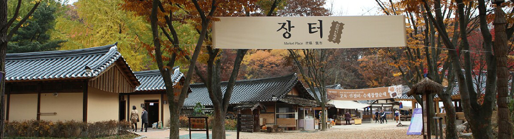
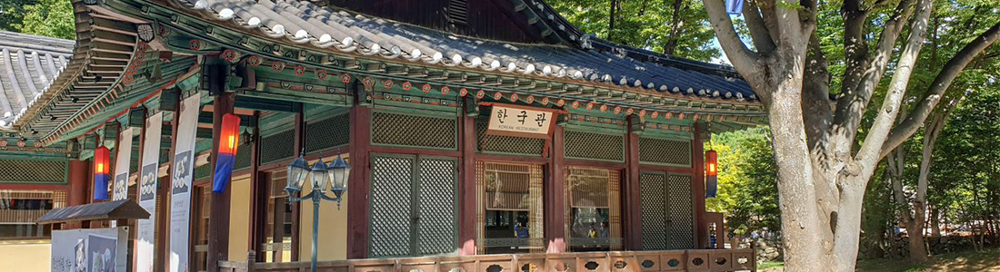
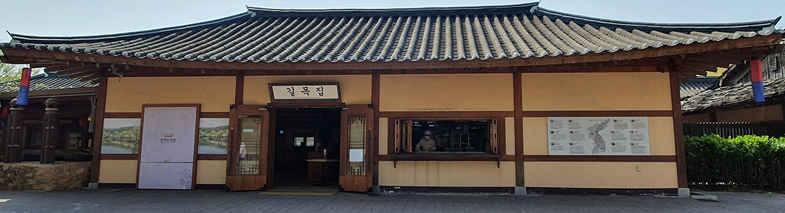
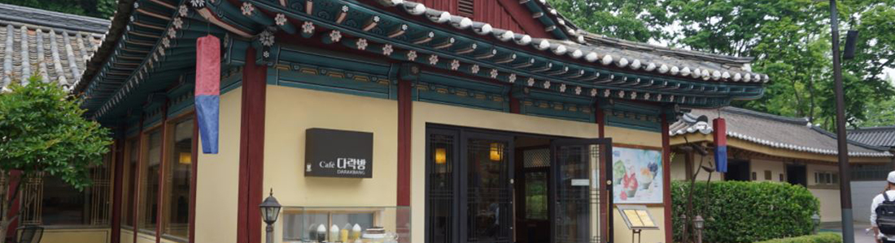
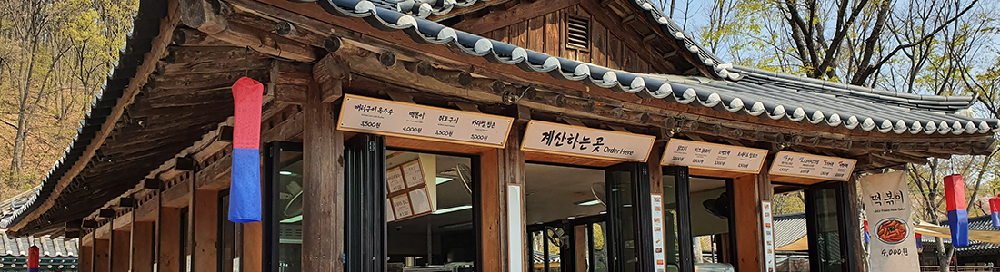

> 민속마을 > 먹거리마당
먹거리마당
장터
고향의 맛과 정취가 물씬 풍기는 저잣거리
한국민속촌의 대표 명소인 장터는 옛 정취를 느끼며 잠시 마음을 달랠 수 있는 조선시대의 저잣거리를 재현한 곳입니다. 장인의 손길이 묻어나는 정성스런 전통의 맛을 느끼실 수 있습니다. 직접 담근 각종 장류를 이용한 계절별 토속음식과 전통 수제 막걸리를 즐겨보세요.
- * 상기 메뉴는 대표 메뉴이며, 계절 및 내부 사정에 따라 변경될 수 있습니다.
- * 아래 메뉴 외에 다양한 음식이 준비되어 있습니다.
- * 예약 및 문의: 031-288-2851~2
상가마을
오랜 시간 정성으로 만들어낸 고향의 맛
한국관
팔자로 뻗은 기와 지붕이 멋스러운 한국관은 정성이 듬뿍 담긴 고급스러운 한정식을 맛 볼 수 있는 곳입니다. 400석의 대형 연회석을 갖춘 한국관은 단체 위주의 기업행사, 피로연, 돌잔치 등의 행사로 접대하여도 손색없는 한국민속촌의 대표 음식점입니다.
- * 상기 메뉴는 대표 메뉴이며, 계절 및 내부 사정에 따라 변경될 수 있습니다.
- * 아래 메뉴 외에 다양한 음식이 준비되어 있습니다.
- * 사전 단체 예약 가능합니다. (수용인원 400명) 예약 및 문의: 031-288-2851~2
길목집
전통적인 기와 지붕이 특색인 길목집은 고즈넉한 정취를 느끼며 식사할 수 있는 곳입니다. 넓은 홀과 수변 테라스를 갖춘 길목집은 전국 8도 대표음식인 경산식 쇠고기 국밥, 목포식 낙지 비빔밥, 안동식 산채 비빔밥, 동래식 해물파전, 종로식 녹두전 등 다양한 식사류와 안주류가 마련되어 있습니다. 특히, 한국민속촌을 가로지르는 지곡천의 수변 테라스에서 가족 및 지인들과 운치있는 식사도 하실 수 있어 더욱 더 특별합니다.
- * 상기 메뉴는 대표 메뉴이며, 계절 및 내부 사정에 따라 변경될 수 있습니다.
- * 아래 메뉴 외에 다양한 음식이 준비되어 있습니다.
- * 사전 단체 예약 가능합니다. (수용인원 450명) 예약 및 문의: 031-288-2851~2
Cafe 다락방
한국민속촌 카페 다락방은 팔작 기와 지붕에 아늑함이 돋보이는 명소로 창 너머로 보이는 한 폭의 그림같은 전경과 함께 은은한 차 한잔의 여유를 느낄 수 있는 곳입니다. 사방에 난 시원한 유리창은 전통한지로 꾸며져 멋을 더합니다. 쌍화탕, 십전대보탕, 인삼차, 대추차, 오미자차 등 맛도 좋고 몸에도 좋은 한국 전통 차와 함께 계절 메뉴인 단팥죽, 식혜와 같은 전통간식과 옛날 팥빙수도 맛보실 수 있습니다.
- * 상기 메뉴는 대표 메뉴이며, 계절 및 내부 사정에 따라 변경될 수 있습니다.
- * 아래 메뉴 외에 다양한 음식이 준비되어 있습니다.
- * 사전 단체 예약 가능합니다. (수용인원 100명) 예약 및 문의: 031-288-2988
민속주전부리
한국민속촌 중앙에 위치한 민속주전부리 매장과 장터초입에 위치한 장터주전부리에서는 아이스크림, 옥수수, 소떡소떡 등 다양한 간식을 판매하고 있습니다. 맛있는 주전부리와 함께 즐거운 관람을 해보세요.
- * 상기 메뉴는 대표 메뉴이며, 계절 및 내부 사정에 따라 변경될 수 있습니다.
- * 아래 메뉴 외에 다양한 음식이 준비되어 있습니다.